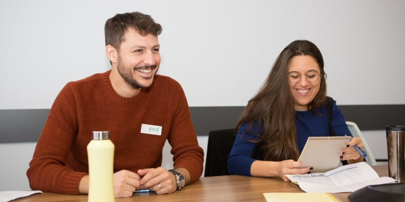
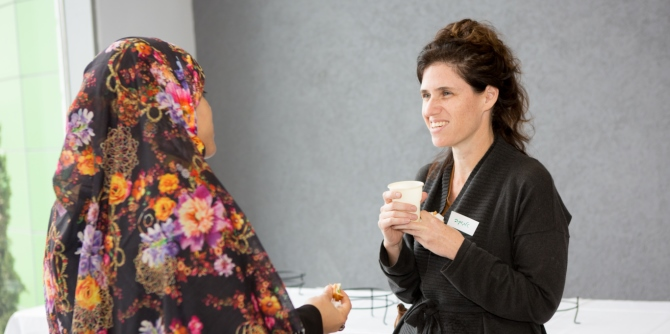

יום הלמידה הייחודי נועד להיכרות בין עמיתי התוכניות הפועלות השנה, ליצירת הזדמנות לשיח משותף על שאלות מנהיגות בנגב, ולהיכרות רעיונית ומעשית עם חזון, תחומי עניין ויוזמות – כתשתית לחיזוקה של קהילת עמיתים הפועלת לחולל שינויים איכותיים במרחב הנגבי.

הקבוצה השנייה עסקה במשילות ונפגשה לשיחה עם סיגל מורן, ראש מועצת בני שמעון לשעבר, ועם לילך קולומבוס, בוגרת תוכנית מנדל למנהיגות אזורית בבאר שבע (מחזור ב'), ששימשה כעוזרת אישית של ראשת המועצה. בשיחה עלו סוגיות של משילות ומנהיגות מבוססת שותפות בפיתוח אזורי.
הקבוצה השלישית עסקה בנושא תעסוקה. לקבוצה זומנו שישה אורחים שהתמקדו בתעסוקת הנשים הבדואיות בנגב, ובייחוד נשים יזמיות במרחב הביתי. בדיון עלו שני נושאים מרכזיים: הראשון, בעיית התעסוקה בנגב לאנשי הנגב (נשים וגברים מכל המגזרים(, בדגש על השאלה מדוע אנשי הנגב נותרים ללא תעסוקה בעוד אנשים שאינם מהנגב מאיישים משרות בנגב במקומות כמו אוניברסיטת בן-גוריון ופארק ההייטק בבאר שבע. השני, ביקורת על יזמות ביתית נשית כפתרון לתעסוקה בקרב החברה הבדואית. הטענה שעלתה היא שפתרון זה משעתק את יחסי הכוחות וממסגר את התרבות כפולקלוריסטית בלבד.

הקבוצה הרביעית עסקה בנושא יוזמות בחינוך. הקבוצה נפגשה עם עדי זנד, מנכ״לית "אדיולוג", שסיפרה על הניסיון לקדם רעיונות חדשניים בחינוך באמצעות חברה פרטית חיצונית למשרד החינוך שתתמוך בייעוץ ובהנחיה בבתי ספר.
היום הסתיים בשיתוף תהליך הלמידה במליאה של נציגי הקבוצות ובשיתוף בחזון האישי של כל אחד מהמשתתפים, במטרה לקדם שיח שותפות ופעולה משתפת.
מזג אוויר סוער וסופת חול שכיסתה באבק צהוב את האזור ביום זה היו לתזכורת נגבית למקום שבו בחרו העמיתים לפעול במחויבות מלאה, ועדות לעוצמת המעשה הנדרשת בתנאי מציאות (וטבע) שיש ללומדם כבסיס לפעולה משמעותית לשינוי מציאות לרווחת תושבי הנגב ושיפור איכות חייהם.

{kind=link}
{kind=link}
{kind=link}
{kind=link}